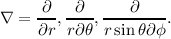
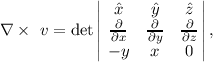
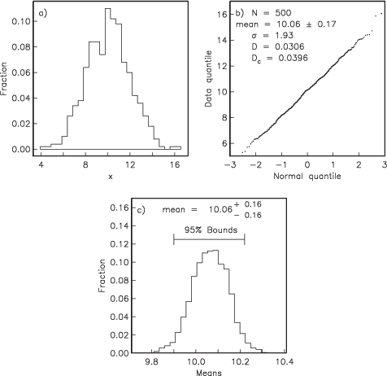

Paleomagnetism is famous for its use of a large number of incomprehensible acronyms. Here we have them gathered together along with definitions and the Section numbers where they are explained in more detail. You will find here a table of physical constants and paleomagnetic parameters used in the text as well as a table listing common statistics used in paleomagnetism. After the tables, there are a few sections with useful mathematical tricks.
Table A.1: Acronyms in paleomagnetism. | |
| Acronym | Definition: Section # |
| AMS | Anisotropy of magnetic susceptibility: Section 13.1 |
| APWP | Apparent polar wander path: Section 16.2 |
| AF | Alternating field demagnetization: Section 9.4 |
| ARM | Anhysteretic remanent magnetization: Section 7.10 |
| ChRM | Characteristic remanent magnetization: Section 9.5 |
| CNS | Cretaceous Normal Superchron: Section 15.1 |
| CRM | Chemical remanent magnetization: Section 7.5 |
| DGRF | Definitive geomagnetic reference field: Section 2.2 |
| DRM | Detrital remanent magnetization: Section 7.6 |
| E/I | Elongation/inclination correction method: Section 16.4 |
| FC | Field cooled: Section 8.8.4 |
| GAD | Geocentric axial dipole: Section 2.3 |
| GHA | Greenwich hour angle: Appendix A.3.8 |
| GPTS | Geomagnetic polarity time scale: Chapter 15 |
| GRM | Gyroremanent magnetization: Section 7.10 |
| IGRF | International geomagnetic reference field: Section 2.2 |
| IZZI | Infield-zero field/ zero field-infield paleointensity protocol: Section 10.1.1 |
| IRM | Isothermal remanent magnetization: Sections 5.2.1 and s7.7 |
| MD | Multi-domain: Chapter 4 |
| MDF | Median destructive field: Section 8.2 |
| MDT | Median destructive temperature: Section 8.2 |
| NRM | Natural remanent magnetization: Chapter 7 |
| pARM | Partial anhysteretic remanence: Section 7.10 |
| pDRM | Post-depositional detrital remanent magnetization: Section 7.6 |
| PSD | Pseudo-single domain: Chapter 4 |
| PSV | Paleosecular variation of the geomagnetic field: Section 14.1 |
| pTRM | Partial thermal remanence: Section 7.4 |
| sIRM | Saturation IRM: See Mr |
| SD | Single domain: Chapter 4 |
| SP | Superparamagnetic: Section 4.3 |
| SV | Secular variation: Section 14.1 |
| TRM | Thermal remanent magnetization: Section 7.4 |
| VADM | Virtual axial dipole moment: Section 2.4.3 |
| VDM | Virtual dipole moment: Section 2.4.3; Equation 2.16 |
| VDS | Vector difference sum: Section 9.6 |
| VGP | Virtual geomagnetic pole: Section 2.4.2 |
| VRM | Viscous remanent magnetization: Section 7.3 |
| SQUID | Superconducting quantum interference device: Section 9.2 |
| UT | Universal time (Greenwich mean time): Appendix A.3.8 |
| ZFC | Zero-field cooled: Section 8.8.4 |
Table A.2: Physical Parameters and Constants. | |
| Symbol | Definition: Section # |
| χ | Magnetic susceptibility: The slope relating induced |
| magnetization to an applied field: Section 1.5 | |
| χARM | ARM susceptibility: Section 8.6 |
| χb | Bulk magnetic susceptibility: Section 1.5; Equation 1.3 |
| χd | Diamagnetic susceptibility: Section 3.2.1 |
| χf | Ferromagnetic susceptibility: Section 3.3 |
| χfd | Frequency dependent: Section 8.3.3 |
| χh | High-frequency susceptibilty: Section 8.8.2 |
| χhf | High-field susceptibilty: Section 5.2.2 |
| χi | Initial susceptibilty: Section 5.2.2 |
| χl | Low-frequency susceptibilty: Section 8.8.2 |
| χp | Paramagnetic susceptibility: Section 3.2.2 |
| δFC | Verwey transition temperature jump while |
| cooling in a field: Section 8.8.4 | |
| δZFC | Verwey transition temperature jump while |
| cooling in zero field: Section 8.8.4 | |
| ΔM curve | Curve defined by subtracting the ascending |
| from the descending curves in a | |
| hysteresis loop: Section 5.2.1 | |
| λ,ϕ | Latitude, Longitude |
| μo | Permeability of free space: (4π x 10-7 Hm-1): Section 1.6 |
| τ | Relaxation time: Section 4.3; Equation 4.11 |
| θm | Magnetic co-latitude: Section 2.4; Equation 2.12 |
| θ | Co-latitude: Section 1.8 |
| aij | Direction cosines: Appendix A.3.5 |
| [am] | Magnetic activity: Section 10.2 |
| a | The radius of the Earth (6.371 x 106 m): Section 2.2 |
| B | Magnetic induction: Section 1.3 |
| C | Frequency factor (1010 s-1): Section 4.3 |
| D | Declination: Section 2.1; Equation 2.4 |
| E | Elongation: Table 8.1 |
| I | Inclination: Section 2.1; Equation 2.4 |
| gml,hml | Gauss coefficients: Section 2.2 |
| H | Magnetic field: Section 1.1 |
| Hcr | Coercivity of remanence; field required to reduce saturation |
| IRM to zero: Section 5.1 | |
| Hc | Coercivity; the magnetic field required to change the magnetic |
| moment of a particle from one easy axis to another: Section 5.1 | |
| I | Inclination: Section 2.1; Equation 2.4 |
| k | Boltzmann’s constant (1.381 x 10-23 JK-1): Section 3.2.2 |
| Ki | AMS measurement: Appendix D.1 |
| Ku | Constant of uniaxial anisotropy energy: Sections 4.1.3 and 4.1.5 |
| m | Magnetic moment: Section 1.2 |
| mb | Bohr magneton (9.27 x 10-24 Am2): Section 3.1 |
| M | Magnetization: Section 1.5 |
| Meq | Equilibrium magnetization: Section 7.3 |
| Mr | Saturation remanence (also sIRM): Section 5.2.1 |
| Ms | Saturation magnetization; the magnetization measured in the |
| presence of a saturating field: Section 5.2.1 | |
| Plm | Schmidt polynomials: Section 2.2 |
| s | Six elements of χij; s1 = χ11,s2 = χ22,s3 = χ33,s4 = χ12,s5 = χ23,s6 = χ13: |
| Section 13.1; Equation 13.3 | |
| Rx | IRM cross-over value: Section ?? |
| T | Absolute temperature (in kelvin) |
| Tb | Blocking temperature: Section 7.4 |
| Tc | Curie (Néel) temperature: Section 3.3, 8.2 |
| Th | Hopkinson Effect: Section 8.2 |
| Tm | Morin transition: Section 8.2 |
| To | Absolute zero: Section 3.3 |
| Tp | Pyrrhotite transition: Section 8.2 |
| Tv | Verwey temperature: Section 4.1.3, 8.2 |
| v | Volume |
| vb | Blocking volume: Section 7.5 |
Table A.3: Common statistics in paleomagnetism. | |
| Statistic | Definition: Section # |
| α95 | Radius of circle (cone) of 95% confidence (Fisher): Section 11.2.1, Equation 11.9 |
| δ | Residual errors for AMS measurements: Section 13.1, Equation 13.11 |
| ϵij | Semi-angles of Hext uncertainty ellipses: Section 13.1, Equation 13.16 |
| κ | Fisher precision parameter: Section 11.2.1,Equation 11.3 |
| η95,ζ95 | Semi-angles of directional 95% uncertainty ellipses: |
| Section C.2.4, Equation C.3 | |
| τ,V | Eigenvalues and eigenvectors of tensors: Section A.3.5, Equation A.18 |
| k | Estimate of κ: Section 11.2.1, Equation 11.8 |
| CSD | Circular standard deviation (Fisher): Section 11.2.1, Equation 11.11 |
| dm | Uncertainty in the meridian (longitude) |
| of a paleomagnetic pole: Section 11.2.1, Equation 11.13 | |
| dp | Uncertainty in the parallel (latitude) |
| of a paleomagnetic pole: Section 11.2.1, Equation 11.13 | |
| F,F12,F23 | Significance tests for anisotropy (Hext): Section 13.2.1, Equation 13.17 |
| MAD | Maximum angular deviation of principal eigenvector (Kirschvink): |
| Section 9.7, Equation 9.1 | |
| MADplane | MAD of the pole to a best-fit plane (Kirschvink): |
| Section 9.7, Equation 9.2 | |
| Mu,Me | Significance tests for uniform and exponential distributions: Section 11.5 |
| Appendix B.1.5, Equations B.6, and B.7 | |
| N | Number of samples, specimens or sites |
| nf | Number of degrees of freedom: Section 13.2, Equation 13.12 |
| R | Resultant vector length of unit vectors, Section 11.2.1, Equation 11.6 |
| Ro | Critical value of R for non-random distribution (Watson): |
| Section 11.3.1, Equation 11.14 | |
| Sf | Scatter of VGPs - corrected for within site scatter: Equation 14.2 |
| Sp | Scatter of VGPs: Equation 14.1 |
| So | Residual sum of squares of errors (Hext): Section 13.2, Equation 13.12 |
| T | Orientation tensor: Appendix A.3.5, Equation A.17 |
Here we derive the Langevin function for a paramagnetic substance with magnetic moments Mmm in an applied field H at temperature T. If we make the assumption that there is no preferred alignment within the substance, we can assume that the number of moments (n(α)) between angles α and α + dα with respect to H is proportional to the solid angle sinαdα and the probability density function, i.e.,
|
| (A.1) |
where Em is the magnetic energy. When we measure the induced magnetization, we really measure only the component of the moment parallel to the applied field, or n(α)mcosα. The net induced magnetization MI of a population of particles with volume v is therefore:
|
| (A.2) |
By definition, n(α) integrates to N, the total number of moments, or
|
| (A.3) |
The total saturation moment of a given population of N individual magnetic moments m is Nm. The saturation value of magnetization Ms is thus Nm normalized by the volume v. Therefore, the magnetization expressed as the fraction of saturation is:
By substituting a = mμoH∕kT and cosα = x, we write
|
| (A.4) |
and finally
|
| (A.5) |
The derivation of superparamagnetism follows closely that of paramagnetism whereby the probability of finding a magnetization vector an angle α away from the direction of the applied field is give by:
|
| (A.6) |
The total magnetization contributed by the N moments is:
|
| (A.7) |
Combining EquationsA.6) and A.7 we get:
|
| (A.8) |
So finally
|
| (A.9) |
In this section, we have assembled assorted mathematical and plotting techniques that come in handy through out this book.
Spherical trigonometry has widespread applications throughout the book. It is used in the transformations of observed directions to virtual poles (Chapter 2) and transformation of coordinate sytems, to name a few. Here we summarize the two most useful relationships: the Law of Sines and the Law of Cosines.
In Figure A.1, α,β and γ are the angles between the great circles labelled a, b, and c. On a unit sphere, a,b and c are also the angles subtended by radii that intersect the globe at the apices A, B, and C (see inset on Figure A.1). Two formulae from spherical trigonometry come in handy in paleomagnetism, the Law of Sines:
|
| (A.10) |
and the Law of Cosines:
|
| (A.11) |
To add the two vectors (see Figure A.2) A and B, we break each vector into components Ax,y and Bx,y. For example, Ax = |A|cosα,Ay = |A|sinα where |A| is the length of the vector A. The components of the resultant vector C are: Cx = Ax + Bx,Cy = Ay + By. These can be converted back to polar coordinates of magnitude and angles if desired, whereby:
To subtract two vectors, compute the components as in addition, but the components of the vector difference C are: Cx = Ax - Bx,Cy = Ay - By.
There are two ways to multiply vectors. The first is the dot product whereby A ⋅ B = AxBx + AyBy. This is a scalar and is actually the cosine of the angle between the two vectors if the A and B are taken as unit vectors (assume a magnitude of unity in the component calculation.
The other way to perform vector multiplication is the cross product (see Figure A.3), which produces a vector orthogonal to both A and B and whose components are given by:
To calculate the determinant, we follow these rules:
or

Vectors belong to a more general concept called tensors. While a vector describes a magnitude of something in a given direction, tensors allow calculation of magnitudes as a function of orientation. Velocity is a vector relating speed to direction, but speed may change depending on direction, so we might need a tensor to calculate speed as a function of direction. Many properties in Earth science require tensors, like the indicatrix in mineralogy which relates the speed of light to crystallographic direction, or the relationship between stress and strain. Tensors in paleomagnetism are used, for example, to transform coordinate systems and to characterize the anisotropy of magnetic properties such as susceptibility. We will cover transformation of coordinate systems in the following.
We use direction cosines in paleomagnetism in a variety of applications, from mineralogy to transformation from specimen to geographic or stratigraphic coordinate systems. Direction cosines are the cosines of the angles between different axes in given coordinate systems, here X and X′ respectively (see, e.g., Figure A.4a.) The direction cosine a12 is the cosine of the angle between the X1 and the X′2, α12 axes. We can define four of these direction cosines to fully describe the relationship between the two coordinate systems:
The first subscript always refers to the X system and the second refers to the X′.

One application of using direction cosines is the transformation of coordinates systems from one set (X) to a new set X′. To find new coordinates x′1,x′2,.. from the old (x1,x2,...), we have:
In three dimensions we have:
which can also be written as:
|
| (A.12) |
with a short cut notation as: x′i = aijxj. However we write this, it means that for each axis i, just sum through the j’s for all the dimensions. The matrix aij is an example of a 3 x 3 tensor and equations of the form Ai = BijCj relating two vectors with a tensor will be used throughout the book. A more common notation is with bold-faced variables which indicate vectors or tensors, e.g., A = B ⋅ C.
Now we would like to apply this to changing coordinate systems for a paleomagnetic specimen in the most general case. The specimen coordinate system is defined by a right-hand rule where the thumb (X1) is directed parallel to an arrow marked on the sample, the index finger (X2) is in the same plane but at right angles and clockwise to X1 and the middle finger (X3) is perpendicular to the other two (Figure A.5a). The transformation of coordinates (xi) from the Xi axes to the coordinates in the desired X′ coordinate system requires the determination of the direction cosines as described in Appendix A.3.5. The various aij can be calculated using spherical trigonometry as in Appendix A.3.1. For example, a11 for the general case depicted in Figure A.5 is cosα, which is given by the Law of Cosines (see Appendix A.3.1) by using appropriate values, or:
The other aij can be calculated in a similar manner. In the case of most coordinate system rotations used in paleomagnetism, X2 is in the same plane as X′1 and X′2 (and is horizontal) so ψ = 90∘. This problem is much simpler. The directions cosines for the case where ψ = 90∘ are:
|
| (A.13) |
The new coordinates can be obtained from Equation A.12, as follows:
|
| (A.14) |
The declination and inclination can be calculated by inserting these values in the equations in Chapter 2.
Given the coordinates of the point on the globe Pp with latitude λp, longitude ϕp the finite rotation pole Pf with latitude λf, longitude ϕf, the way to transform coordinates is as follows (you should also review Appendix A.3.5).
| Age | ϕ | Ω | Age | ϕ | Ω | Age | ϕ | Ω | Age | ϕ | Ω |
| 5 | 56 | 2.2 | 85 | 138.1 | 19.3 | 165 | 157 | 30.7 | 245 | 137.4 | 36.5 |
| 10 | 57.6 | 2.5 | 90 | 142.9 | 19.6 | 170 | 159.5 | 32.5 | 250 | 143.1 | 39.6 |
| 15 | 53.9 | 2.5 | 95 | 144.7 | 20.5 | 175 | 167.6 | 28.8 | 255 | 145.4 | 40.4 |
| 20 | 66.5 | 3 | 100 | 144.3 | 20.8 | 180 | 167.8 | 27.7 | 260 | 145.6 | 41.8 |
| 25 | 75.5 | 4.7 | 105 | 150.8 | 22.3 | 185 | 167.4 | 25.9 | 265 | 144.8 | 41.9 |
| 30 | 84.1 | 6.8 | 110 | 160.2 | 26.9 | 190 | 168.4 | 21.6 | 270 | 141.6 | 47.1 |
| 35 | 95.8 | 7.9 | 115 | 169.2 | 32.1 | 195 | 158.8 | 18.2 | 275 | 140.3 | 46.8 |
| 40 | 98.8 | 8.7 | 120 | 170.3 | 35.6 | 200 | 147.9 | 17.8 | 280 | 138.2 | 51.1 |
| 45 | 107.5 | 9.2 | 125 | 171.3 | 36.2 | 205 | 144.4 | 19.2 | 285 | 138.6 | 51.6 |
| 50 | 110.9 | 10.3 | 130 | 172.1 | 37.5 | 210 | 137.4 | 20.7 | 290 | 136.5 | 51.8 |
| 55 | 111.6 | 13.2 | 135 | 170 | 39.4 | 215 | 133.6 | 23.1 | 295 | 135.8 | 52.8 |
| 60 | 115.7 | 13.9 | 140 | 172.6 | 42.1 | 220 | 129.9 | 26.4 | 300 | 136.8 | 53.5 |
| 65 | 123.5 | 15.7 | 145 | 163.1 | 40.8 | 225 | 127.2 | 27.2 | 305 | 136.9 | 55.4 |
| 70 | 127.8 | 17.5 | 150 | 155.2 | 38.1 | 230 | 128 | 29.4 | 310 | 138.9 | 56.3 |
| 75 | 137.2 | 17.5 | 155 | 155 | 34.8 | 235 | 130 | 31.4 | 315 | 139.9 | 59.5 |
| 80 | 140.3 | 19.2 | 160 | 155 | 33.2 | 240 | 133.6 | 35.3 | 320 | 138.9 | 60.8 |
The orientation tensor T (Scheidegger, 1965) (also known as the matrix of sums of squares and products), is extremely useful in paleomagnetism. This is found as follows:
|
| (A.15) |
where N is the number of data points involved. Note that for unit vectors, the center of mass is the same as the Fisher mean (Chapter 11).
|
| (A.16) |
where x′i are the transformed coordinates.
|
| (A.17) |
T is a 3 x 3 matrix, where only six of the nine elements are independent. It is constructed in some coordinate system, such as the geographic or sample coordinate system. Usually, none of the six independent elements are zero. There exists, however, a coordinate system along which the “off-axis” terms are zero and the axes of this coordinate system are called the eigenvectors of the matrix. The three elements of T in the eigenvector coordinate system are called eigenvalues. In terms of linear algebra, this idea can be expressed as:
|
| (A.18) |
where V is the matrix containing three eigenvectors and τ is the diagonal matrix containing three eigenvalues. Equation A.18 is only true if:
|
| (A.19) |
If we expand equation A.19, we have a third degree polynomial whose roots (τ) are the eigenvalues:
![T12[T12(T33 - τ)- T13T23]+ T13[T13T23 - T13(T22 - τ)] = 0.](WebBook3459x.png)
The three possible values of τ (τ1,τ2,τ3) can be found with iteration and determination. In practice, there are many programs for calculating τ. My personal favorite is the Numpy Module for Python (see many free websites, especially Scientific Python (SciPy) for hints). Please note that the conventions adopted here are to scale the τ’s such that they sum to one; the largest eigenvalue is termed τ1 and corresponds to the eigenvector V1.
Inserting the values for the transformed components calculated in equation A.16 into T gives the covariance matrix for the demagnetization data. The direction of the axis associated with the greatest scatter in the data (the principal eigenvector V1) corresponds to a best-fit line through the data. This is usually taken to be the direction of the component in question. This direction also corresponds to the axis around which the “moment of inertia” is least. The eigenvalues of T are the variances associated with each eigenvector. Thus the standard deviations are σi = .
We often wish to differentiate a function along three orthogonal axes. For example, imagine we know the topography of a ski area (see Figure A.6). For every location (in say, X and Y coordinates), we know the height above sea level. This is a scalar function. Now imagine we want to build a ski resort, so we need to know the direction of steepest descent and the slope (red arrows in Figure A.6).

To convert the scalar field (height versus position) to a vector field (direction and magnitude of greatest slope) mathematically, we would simply differentiate the topography function. Let’s say we had a very weird two dimensional, sinusoidal topography such that z = f(x) = sinx with z the height and x is the distance from some marker. The slope in the x direction (), then would be d _ dxf(x). If f(x,y,z) were a three dimentional topography then the gradient of the topography function would be:
For short hand, we define a “vector differential operator” to be a vector whose components are

This can also be written in polar coordinates:
The divergence of a vector function (e.g. H) is written as:
The trick here is to treat ∇ as a vector and use the rules for dot products described in Appendix A.3.2. In cartesian coordinates, this is:
Like all dot products, the divergence of a vector function is a scalar.
The name divergence is well chosen because ∇⋅ H is a measure of how much the vector field “spreads out” (diverges) from the point in question. In fact, what divergence quantifies is the balance between vectors coming in to a particular region versus those that go out. The example in Figure A.7 depicts a vector function whereby the magnitude of the vector increases linearly with distance away from the central point. An example of such a function would be v(r) = r. The divergence of this function is:
Now consider Figure A.8, which depicts a vector function that is constant over space, i.e. v(r) = k. The divergence of this function is:
The zero divergence means that for every vector leaving the box, there is an equal and opposite vector coming in. Put another way, no net flux results in a zero divergence. The fact that the divergence of the magnetic field is zero means that there are no point sources (monopoles), as opposed to electrical fields that have divergence related to the presence of electrons or protons.
The curl of the vector function B is defined as ∇× B. In cartesian coordinates we have
Curl is a measure of how much the vector function “curls” around a given point. The function describing the velocity of water in a whirlpool has a significant curl, while that of a smoothly flowing stream does not.
Consider Figure A.9 which depicts a vector function v = -y + xŷ. The curl of this function is:
or
The magnetic field has a non-zero curl in the presence of currents or changing electric fields. In free space, away from currents (lightning!!), the magnetic field has zero curl.
Sometimes things just are not normal. Statistically that is. When you can not assume that your data follow some known distribution, like the normal distribution, or the Fisher distribution, what do you do? In this section, we outline a technique called the bootstrap, which allows us to make statistical inferences when parametric assumptions fail. The reader should also refer to Efron and Tibshirani (1993) for a more complete discussion.
In Figure A.10, we illustrate the essentials of the statistical bootstrap. We will develop the technique using data drawn from a normal distribution. First, we generate a synthetic data set by drawing 500 data points from a normal distribution with a mean of 10 and a standard deviation σ of 2. The synthetic data are plotted as a histogram in Figure A.10a. In Figure A.10b we plot the data as a Q-Q plot (see Appendix B.1.5) against the zi expected for a normal distribution.
The data in Figure A.10a plot in a line on the Q-Q plot (Figure A.10b). The value for D is 0.0306. Because N = 500, the critical value of D, Dc at the 95% confidence level is 0.0396. Happily, our normal distribution simulation program has produced a set of 500 numbers for which the null hypothesis of a normal distribution has not been rejected. The mean of the synthetic dataset is about 10 and the standard deviation is 1.9. The usual Gaussian statistics allow us to estimate a 95% confidence interval for the mean as ±1.96σ∕ or ±0.17.
In order to estimate a confidence interval for the mean using the bootstrap, we first randomly draw a list of N data by selecting data points from the original data set. This list is called a pseudo-sample of the data. Some data points will be used more than once and others will not be used at all. We then calculate the mean of the pseudo-sample. We repeat the procedure of drawing pseudo-samples and calculating the mean many times (say 10,000 times). A histogram of the “bootstrapped” means is plotted in Figure A.10c. If these are sorted such that the first mean is the lowest and the last mean is the highest, the 95% of the means are between the 250th and the 9,750th mean. These therefore are the 95% confidence bounds because we are approximately 95% confident that the true mean lies between these limits. The 95% confidence interval calculated for the data in Figure A.10 by bootstrap is about ± 0.16 which is nearly the same as that calculated the Gaussian way. However, the bootstrap required orders of magnitude more calculations than the Gaussian method, hence it is ill-advised to perform a bootstrap calculation when a parametric one will do. Nonetheless, if the data are not Gaussian, the bootstrap provides a means of calculating confidence intervals when there is no quick and easy way. Furthermore, with a modern computer, the time required to calculate the bootstrap illustrated in Figure A.10 was virtually imperceptible.
In a sun compass problem, we have the direction of the sun’s shadow and an angle between that and the desired direction (α). The declination of the shadow itself is 180∘ from the direction toward the sun. In Figure A.11, the problem of calculating declination from sun compass information is set up as a spherical trigonometry problem, similar to those introduced in Chapter 2 and Appendix A.3.1. The declination of the shadow direction β′, is given by 180 - β. We also know the latitude of the sampling location L (λL). We need to calculate the latitude of S (the point on the Earth’s surface where the sun is directly overhead), and the local hour angle H.
Knowing the time of observation (in Universal Time), the position of S (λs = δ,ϕs in Figure A.11) can be calculated with reasonable precision (to within 0.01∘) for the period of time between 1950 and 2050 using the procedure recommended in the 1996 Astronomical Almanac:
We can now calculate the Greenwich Hour Angle GHA from the Universal Time U (in minutes) by GHA = (U + E)∕4 + 180. The local hour angle (H in Figure A.11) is GHA + ϕL. We calculate β using the laws of spherical trigonometry (see Appendix A.3.1). First we calculate θ by the Law of Cosines (remembering that the cosine of the colatitude equals the sine of the latitude):
and finally using the Law of Sines:
If λs < λL, then the required angle is the shadow direction β′, given by: β′ = 180 - β. The azimuth of the desired direction is β′ plus the measured shadow angle α.